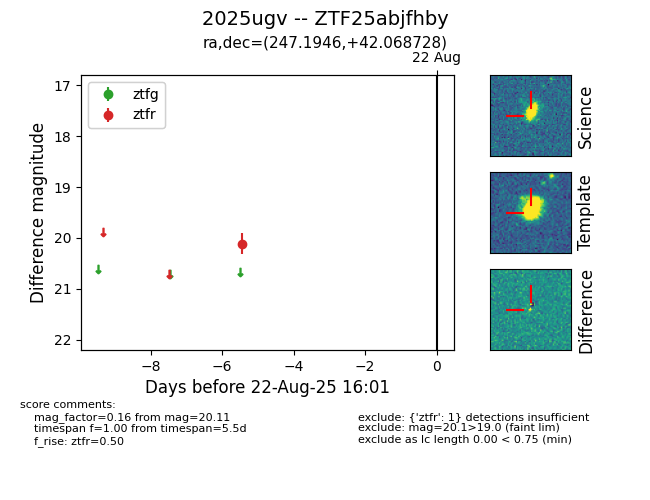

Target 2025ugv at 2025-08-21 09:29, see:
FINK: fink-portal.org/ZTF25abjfhby
Lasair: lasair-ztf.lsst.ac.uk/objects/ZTF25abjfhby
ALeRCE: alerce.online/object/ZTF25abjfhby
TNS: wis-tns.org/object/2025ugv
YSE: ziggy.ucolick.org/yse/transient_detail/2025ugv
alt names
ZTF25abjfhby (ztf,alerce)
2025ugv (tns,yse)
coordinates:
equatorial (ra, dec) = (247.1946,+42.06873)
galactic (l, b) = (66.4164,+43.68726)
photometry
last ztfr=20.11
1 ztfr detections
